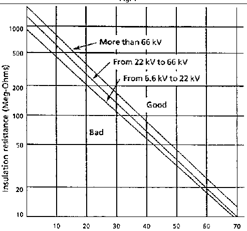
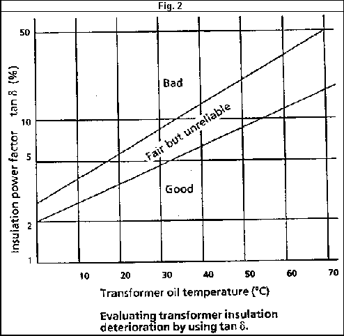

| Substations |
|
Power Transformers
Transformers Insulation Deterioration
|
|
| |||
| Equipment: Power Transformers |
Document No.: | |||
| Issued
to: | ||||
| Status: APPROVED | ||||
|
Bulletin: Transformers Insulation Deterioration |
Approved Date: 29 Dec 1997 | |||
| Date to be Reviewed: Feb 2007 | ||||
Introduction
The first approval of the document was at 29 Dec 1997, MPIS General Directorate looked at the document and revised at 12 Feb 2002 to be as MPIS rules.
The purpose of this bulletin is to provide field staff with a general information regarding insulation testing and the interpretation of results.
Measuring the insulation resistance of the transformer is the most expedient way of checking the degree of insulation deterioration. Since the insulation resistance reading is dependent on moisture, care must be taken when performing this measurement.
Information
While measuring and evaluating insulation resistance and power factor, it must be noted that the insulation values differ from one manufacture to another and from one type of transformer to another.
Every transformer arrives with a complete set of factory test result. These results should be used as a reference point for making any analyses of subsequent test results. With regards to testing, it is advisable to use the same test equipment/instruments each time the test is performed to ensure consistency and continuity of test result from one time to the next.
Most of the information in this document pertains specifically to Hitachi Transformers, however can be used as a guideline for other manufacture types. However if available, it is advisable to use the actual information specified by the manufacture of the transformer under test.
Recommendation
It is recommended each power transformer be tested for insulation deterioration on a regular basis. Following are general guidelines for performing insulation resistance test and insulation power factor test.
Insulation Resistance
To measure the transformer insulation resistance correctly, isolate the transformer from its power supply and thoroughly clean the exposed bushings. Measure between each winding
and earth and between the windings. The graph in figure 1. below shows the levels (from poor to good) of insulation resistance. Besides meeting the requirements of the graph, the
Insulation resistance reading must also not deviate excessively from previously logged readings.

Insulation Power Factor* (Tan 8)
The value of the insulation power factor is closely related to the moisture content of the transformer winding insulation (when the transformer is filled with insulating oil). Basically, the greater the value of insulation power factor, the more sharply the insulation resistance declines. Measurement by a Schering Bridge or similar device is highly recommended. Note as previously mentioned, once measurements are started with a certain meter, measurements over subsequent years should also be taken with the same meter to ensure consistency. The graph in figure 2 shows use of the insulation power factor to evaluate the state of a transformer's insulation integrity.
Note: Insulation power factor means dielectric dissipation factor

.......................................................................................................................................................................................
Location:
Equipment code:
Checked by:
Date:
Signature: